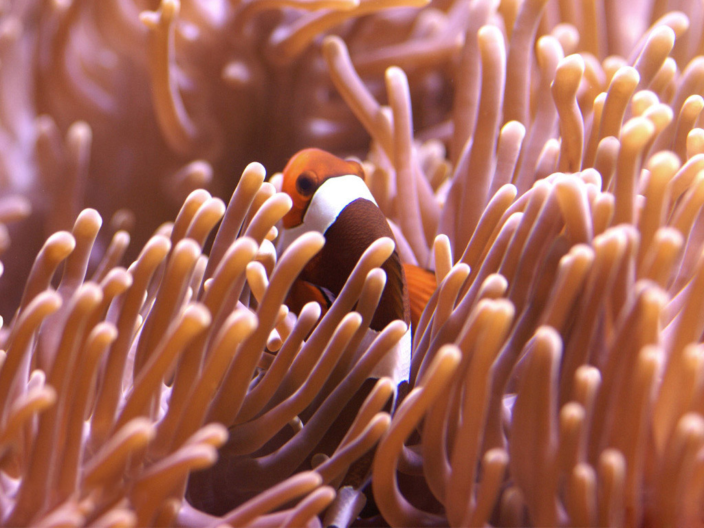

心形礁是澳大利亚的著名风景点大堡礁的一奇特景观，也是在大堡礁我们应该必看的景点之一，在空中俯瞰，它是一个天然的心形，再加上大堡礁本身很好看的水色，景色更是美轮美奂。
心形礁，位于澳大利亚，是大堡礁的一部分。形如其名，如果说这是上帝的作品,那么似乎可以说,原来上帝也是愿意把这里当作心灵的栖息之地的.
大堡礁是世界上最大的珊瑚群，珊瑚虫分泌的石灰质骨骼，连同藻类、贝壳等海洋生物残骸胶结在一起，堆积成了一个个珊瑚礁体。这里是海洋生物的伊甸园，也是人类幻想中的自己的伊甸园。
这里生活着多种多样的活珊瑚，它的分泌物和其他的一些物质构成了现今的珊瑚礁。营造如此庞大“工程”的是直径只有几毫米的腔肠动物——珊瑚虫。珊瑚虫最早出现约4.7亿年前的古生代奥陶纪中期。珊瑚虫只能生活在全年水温保持在22-28℃的水域里，水质必须洁净。澳大利亚东北岸外大陆架海域具备珊瑚虫繁衍生息的条件。珊瑚虫以浮游生物为食，营集体生活。珊瑚虫常常分泌出一种碳性物质，这种物质与珊瑚虫石灰质的骨骼及单细胞藻类的残骸混合、堆积，形成礁区。它们有的在水面以下，有的露出水面，露出水面的珊瑚群就是海岛。第一代珊瑚虫死后留下遗骸，新一代继续发育繁衍，向高处和两旁发展。如此日积月累，珊瑚虫的石灰质骨骸连同藻类、贝壳等海洋生物残骸胶结在一起，逐渐堆积成巨大的珊瑚礁体。
图片轮播: 